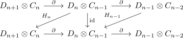
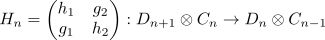

chain homotopy equivalence and cone as contractible chain complex
Proposition
Let $\mathcal{A}$ be an abelian category and $\mathrm{Ch_*}(\mathcal{A})$ be the category of chain complexes. Suppose $A_*,B_*$ are chain complexes and $f: A_* \rightarrow B_*$ a chain map
TFAE:
- $f$ is a chain homotopy equivalence
- the mapping cone $C(f)$ is contractible chain complex
Proof
1) $\implies$ 2)
Let $g: D_n \rightarrow C_n$ be a homotopy inverse, $h_1: D_n \rightarrow D_{n+1},h_2: C_n \rightarrow C_{n+1}$ the homotopies.
Take
Then as stated below, this suffices

2) $\implies$ 1)
Suppose $C(f)$ is contractible, then there exists a map

for
\begin{align*}
h_1: D_n \rightarrow& D_{n+1} \\
h_2: C_n \rightarrow& C_{n+1} \\
g_1: D_n \rightarrow& C_n \\
g_2: C_{n-1} \rightarrow& D_{n+1}
\end{align*}
satisfying
\begin{align*}
(d,c) =& (\mathrm{id} - 0)(d,c) \\
=& H(\partial(d) + f(c), - \partial(c)) + (\partial)(h_1(d) + g_2(c), h_2(c) + g_1(d)) \\
=& (h_1(\partial (d)) + h_1(f(c)) - g_2(\partial (c)), - h_2(\partial (c)) + g_1(\partial (d)) + g_1(f(c))) + (\partial h_1(d)) + \partial(g_2(c)) + fh_2(c) + fg_1(d), - \partial h_2(c) - \partial g_1(d)) \\
=& (h_1 \partial(d) + \partial h_1(d) - g_2(\partial (c)) + \partial (g_2(c)) + h_1f(c) + fh_2(c) + fg_1(d), g_1(\partial (d)) - \partial (g_1(d)) - \partial h_2(c) - h_2(\partial(c)) + g_1f(c)) \\
\end{align*}
Since the $(d,-)$ is independent from $c$, we conclude that
\begin{align*}
g_2(\partial(c)) + \partial (g_2(c)) + h_1(f(c)) + fh_2(c) = 0
\end{align*}
analogously
\begin{align*}
g_1(\partial(d)) - \partial(g_1(d)) = 0
\end{align*}
Showing
\begin{align*}
(d,c) =& (h_1 (\partial(d)) + \partial (h_1(d)) + fg_1(d), - \partial h_2(c) - h_2(\partial(c)) + g_1f(c))
\end{align*}
Here $g_1: D_n \rightarrow C_n$ suffices as homotopy inverse for $f$ with
\begin{align*}
\mathrm{id}(d) - fg_1(d) =& h_1 \partial (d) + \partial h_1(d) \\
\mathrm{id}(c) - g_1f(c) =& \partial (-h_2)(c) + (-h_2)(\partial(c)
\end{align*}